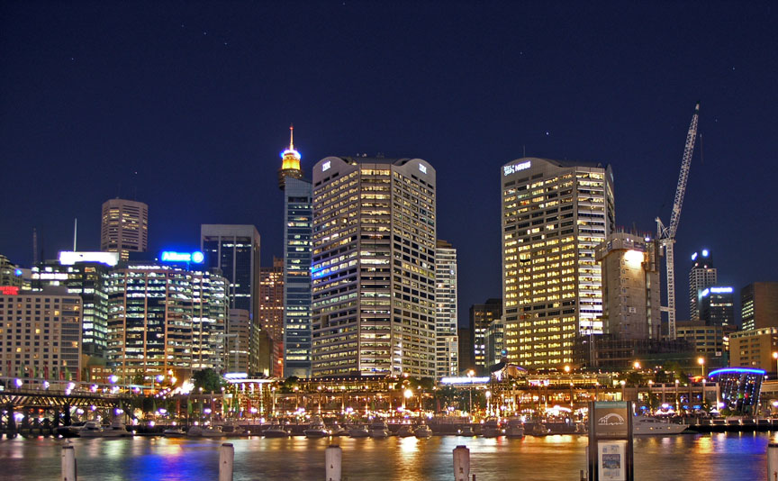

Operahuset och Sydney CBD i skymning.
Sedney Stadsdelar
Det mångkulturella Sydney har en rad stadsdelar, alla med sin egen inriktning och specialitet. Här följer en översikt över några av dem:
Central business district, CBD, är Sydneys hjärta, här finns större köpcentrum, hotell och andra nöjesmötesplatser. Som namnet antyder hyser CBD också en rad av Sydneys viktigaste finansiella affärsinstitutioner. Stadsdelens byggnader reflekterar också en stor del av Sydneys kommersiella historia med allt från vördnadsbjudande banker till ultramoderna skyskrapor. Här finns också några av Sydneys äldsta byggnader, till exempel 1819 års Hyde Park Barracks och St James Church från 1822.
Sydney central business district.
Chinatown, här slog sig Sydneys ursprungliga kinesiska befolkning ned i början av 1900-talet.
Många av dem var grönsaksodlare och handelsmän och inom kort hade en rad affärer och restauranger öppnat, särskilt i centrum av Chinatown - Dixon Street. Idag kan man här besöka "Paddy's Market", en jättelik inomhusmarknad med krimskrams, souvenirer och matvaror.
Kings Cross med omnejd var ursprungligen en plats där de rika lät bygga sina hus och därför finns det här många fina och ståtliga hus. Idag är Kings Cross, tillsammans med närliggande Potts Point och Elizabeth Bay, Australiens mest tätbefolkade område.
Det är känt för sitt rika nattliv och restaurangområde, därför är Kings Cross en naturlig magnet för turister. En del synlig prostitution förekommer också i området.
Darling Harbour var ett av Sydneys största industriområden. Här fanns hamn, järnvägsstation och en internationell sjötransportsterminal.
Området förföll dock en aning men fräschades upp 1988 av staten och idag finns här en mängd parker, museum, shoppingcentrum och restauranger.
Pyrmont-Ultimo-halvön var en gång i tiden en vital del i stadens sjötrafik, här fanns varv och annan båtindustri, fabriker och ullförsäljning.
När industrin försvann så förföll Pyrmont, likt Darling Harbour, och folkmängden minskade drastiskt. Men på senare år har nya inflyttningar till området börjat ske, då främst kontorsarbetare.
Darling Harbour.
Darlinghurst eller "Darlo" fick sitt namn från NSW-guvernören Ralph Darling. Den mångkulturella stadsdelen är idag mest känt som centrum för Sydneys homosexuella befolkning och för Sydney Gay & Lesbian Mardi Gras.
Förr däremot var Darlinghurst främst berömt för sitt fängelse som idag är National Art School, och även för Darlinghurst Court House som byggdes 1835.
Glebe är ett område i nordvästra Sydney. Den södra delen av Glebe, Glebe Point, blev populärt i början av 1800-talet medan den södra delen av Glebe blev ett område för arbetarklassen. Idag är området ett av Sydneys mest populära, både för studenter, kringresande och stadens äldre invånare.
Förutom områdets många affärer, gallerier och restauranger så ståtar området med en mängd vattennära parker och en samling historiska arbetarbostäder och herrgårdar.
Surry Hills låg i början av 1800-talet i Sydneys utkant, det var därför en ideal plats för en herrgård, men området förföll under årens lopp till ett slumområde med bordeller och ökända gäng.
Dagens Surry Hills däremot är helt annorlunda, idag är området, likt angränsande Strawberry Hills, mer känt för sina konstgallerier, antikhandlare, kaféer, pubar och klädmarknader.

King Street i Newtown.